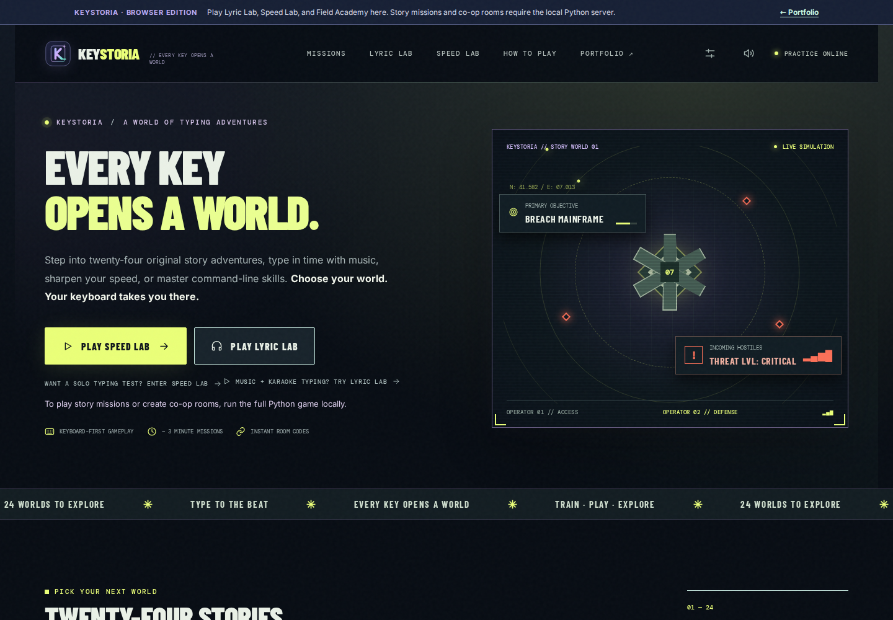

Story Worlds
Twenty-four original adventures with illustrated scenes and cooperative typing. Run the local server to play solo with ECHO or invite a friend by room code.
LOCAL STORY CAMPAIGN →✦ ORIGINAL TYPING GAME COLLECTION PORTFOLIO PROJECT
A keyboard becomes an escape route, a rhythm instrument, a challenge, and a new skill. Customize your world with 15 selectable themes. Keystoria turns typing into something worth coming back for.

01 / CHOOSE YOUR EXPERIENCE
Different genres, different goals. The same simple idea: make every keystroke matter.
Twenty-four original adventures with illustrated scenes and cooperative typing. Run the local server to play solo with ECHO or invite a friend by room code.
LOCAL STORY CAMPAIGN →Type along with timed lyrics. A flashing next-letter cue, color-coded accuracy, and an original offline demo make rhythm practice feel intuitive.
MUSIC + TYPING →Choose a 15-, 30-, 60-, or 120-second typing challenge. Practice Everyday, Technology, Story, six workplace word banks, or numeric Numpad drills with live feedback, WPM or CPM, and local scores.
PURE TYPING PRACTICE →Learn real command patterns across Windows, macOS, and Linux inside a safe teaching simulation. Nothing is executed on your device.
SKILLS + INTERACTION →
02 / THE LITTLE DETAILS
When a word is active in Lyric Lab, the current letter flashes in place. Correct input turns green, mistakes become red, and the yellow word highlight stays visible. It's a small detail that makes the whole experience easier to follow.
03 / ENGINEERING
An original browser experience backed by a real-time game server, authored content, and testable interactions.
Real-time asymmetric roles, a server-authoritative game engine, and reconnect handling.
Modular UI controllers, responsive CSS, no frontend build step, and local save state.
Mission logic, timed room updates, optional video matching, and local development launchers.
Python and JavaScript regressions plus Chromium browser checks for important gameplay flows.
04 / WHAT COMES NEXT
A public record of what has shipped, what's planned, and the engineering work behind each improvement.
Numpad shipped November 9. Mobile touch-friendly practice and six curated workplace word banks followed with verified Pages deployments November 11 (Mountain Time). Real phone-keyboard verification remains open.
Input-adjacent prompts, mobile touch actions, and viewport-aware scrolling are now in the browser edition. Physical iPhone/Android keyboard checks, landscape details, and accessibility refinements remain open.
GitHub Pages blocks broken links and gameplay regressions before release, including deliberate negative-control tests. Lyric Lab now recovers from provider errors and blocked videos with silent practice. Focus stays inside open dialogs for keyboard navigation.
Keyboard skip navigation, accessible score announcements, dialog focus management and 15-theme contrast tests are now shipped. Real device and screen-reader checks remain; secure public co-op is still being evaluated.
Dedicated Numpad number drills and six curated workplace word banks are now playable. All ten practice categories preserve timers, scoring, and local result history.
Explore opt-in personal goals and useful progress insights, with privacy-first local storage and clear export controls.
05 / GETTING HANDS ON
Play the real Keystoria interface directly in your browser. Lyric Lab, Speed Lab, and Field Academy run on this site, with no account or installation required. The 24 cooperative story missions still need the Python/WebSocket game server and can be played locally.
macOS: Open app/ and run run_mac.command.
Windows: Open app/ and run run_windows.bat.
Browser: Open http://localhost:8080 after starting the server.